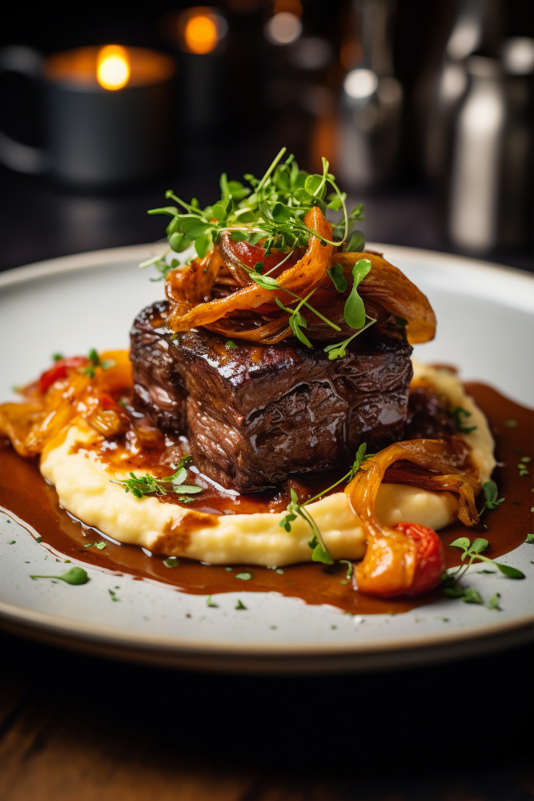

Roast Beef Manhattan
a.k.a. Hot Roast Beef Sandwich

History
The Beef Manhattan is a roast beef sandwich with mashed potatoes and gravy
that originated in Indianapolis in the late 1940s. The dish is named after
workers at the Naval Ordnance Plant (NOPI) who were trained in Manhattan
during World War II and enjoyed an open-faced sandwich there. They then
brought the sandwich back to the factory cafeteria, where it became known
as the Beef Manhattan.
Ingredients
Roast
- 1 chuck roast
- 2 - 3 tsp. seasoned salt
- 1 - 2 Tbsp. oil
- 2 onions, peeled and cut into wedges
- 12 oz. Sprite, 7-UP or similar soft drink (and/or beef stock)
Gravy
- 3 Tbsp. fat from roasted meat and/or butter
- 3 Tbsp. flour
- 16 oz. beef (chicken, turkey or vegetable) stock
- Salt, to taste
-
Montreal steak seasoning or a mixture of black pepper, onion powder,
herbs, etc., to taste
-
1 Tbsp. +/- Worcestershire sauce or 1 tsp. +/- Kitchen Bouquet
(optional)
Sandwich
- Quality sliced bread (white bread is traditional)
- Mashed potatoes
Directions
Roast
-
Evenly sprinkle seasoned salt on both sides of roast (size of roast
will determine how much salt is needed).
-
Place oil in a Dutch Oven or skillet on medium-high to high heat.
- When oil is hot, add roast and brown on both sides.
-
If using a Dutch oven, leave the roast in the pot. If using a
skillet, remove roast and place it in a roasting/baking pan or a
crock-pot*
- Add onions around the meat.
- Season onions and roast with more seasoned salt.
-
Pour enough soft drink and/ or beef stock over and around the meat
and onions to about 1/3 to 1/2 of the way up the side of the meat.
- Cover (if using a roasting/baking pan, seal with foil).
-
Place in a 325 degree oven for 3 - 4 hours or until roast is very
tender. (Use a fork to test).
-
*If using a crock-pot, follow directions for oven roasting except
cook on low for 6 to 8 hours.
Gravy
- Melt butter or fat in a skillet.
- Sprinkle and whisk in flour.
-
Stir for a minute or two to cook the raw taste from the flour.
- Slowly whisk in the stock.
- Add salt and dry seasonings to taste.
- Add Worcestershire sauce or Kitchen Bouquet, if desired.
-
Bring to a boil, lower to a simmer and cook for a few minutes until
desired thickness is reached.
Sandwich
-
Place warm, shredded (or sliced) roast beef on a slice of bread. Top
with another slice of bread. Cut roast beef sandwich in half and
place in a V-shape on a plate.
- Place a scoop of mashed potatoes inside of the V.
- Spoon/Pour the gravy over the sandwich and mashed potatoes.
- Serve immediately.